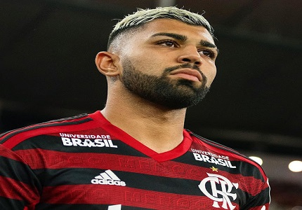
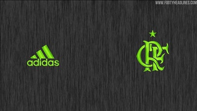
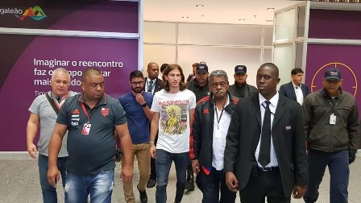
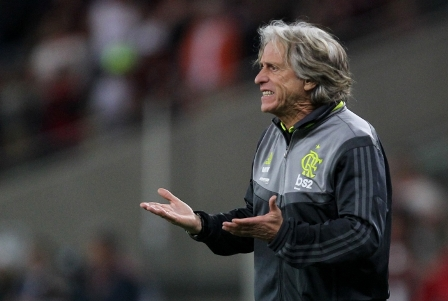
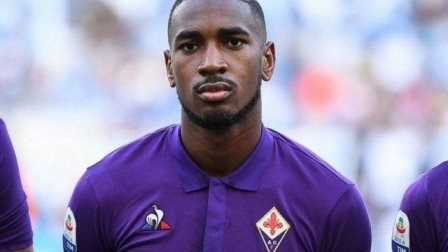
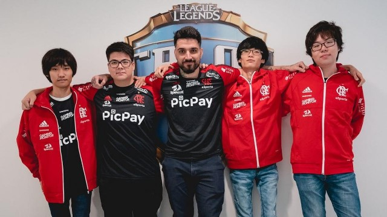
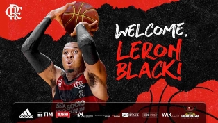

Meia e centroavante conduzem Rubro-Negro a triunfo sobre Palmeiras no Brasileirão; volante cumpriu bem o papel de primeiro volante com bons desarmes e antecipações
Rubro-Negro não consegue sair vitorioso contra o rival paulista desde 2014. Foram 4 derrotas e 5 empates em nove partidas desde então. Relembre os últimos dez jogos entre os dois
Rubro-Negro se acerta com o Deportivo Cali para
receber além dos 70% que teria direito e libera o
volante. Dúvida sobre o destino marcou a
semana, mas saída era iminente

Atacante realizou exames e iniciou tratamento no CT George Helal nesta sexta-feira

Segundo o Esporte Interativo, clube brasileiro está próximo de oficializar a venda do garoto por 40 milhões de euros

O Flamengo prepara o lançamento de sua nova camisa 3 para o final desta semana. A camisa será predominantemente “cinza chumbo”, com número, símbolo do Fla e logo da Adidas em “verde limão metálico”.
O confronto, pela 15ª rodada do Campeonato Brasileiro, está marcado para 17 de agosto, às 19h

Reforço do Flamengo, Filipe Luís desembarcou no Rio de Janeiro no início da manhã desta quinta-feira para iniciar a trajetória em seu clube de infância.

Com grave lesão no tornozelo, capitão do time terá de passar por cirurgia e desfalcará o clube carioca por vários meses

Delegação rubro-negra chegou no Galeão na manhã desta quinta-feira e deixou local por saída especial. Com fratura no tornozelo, meia Diego deixou aeroporto de cadeira de rodas
Rubro-Negro arranca empate com o Corinthians fora de casa, mas atuação ruim ofensivamente liga alerta antes do Emelec. Versão Jesus ainda não conseguiu render sem principais articuladores

O técnico Jorge Jesus tentou se precaver e fez algumas mudanças na equipe, e deixou, por exemplo, Rafinha no banco. A boa notícia foi a estreia de Gerson com desenvoltura.

Atacante sofreu uma torção no tornozelo direito no jogo contra o Goiás, e como as dores continuaram, não foi relacionado para a partida contra o Athletico-PR nesta quarta
A tendência é que a base da equipe que goleou o Goiás seja mantida, mas com a possibilidade de algumas mudanças. Uma confirmada, já que Bruno Henrique torceu o tornozelo direito e está fora.

Volante vive desconforto interno e ainda não respondeu sobre proposta de aumento de salário

Gerson será reforço do Flamengo. Apenas alguns detalhes entre a Roma e o Rubro-Negro precisam ser finalizados para o meia ser anunciado oficialmente.

Contrato milionário seria de 10 anos com o Rubro Negro carioca.

O ala-pivô americano Leron Black defenderá o Flamengo na próxima temporada. O Rubro-Negro anunciou a contratação do jogador

Jogador estava perto de deixar o Rubro-Negro, mas seu estilo de jogo agradou ao comandante

Destaque nas divisões de base, o meia de 17 anos é a próxima grande aposta do clube da Gávea e da Nação, que espera vê-lo em campo já neste segundo semestre de 2019

Auxiliar na época de Abel Braga comandou o time nas últimas quatro partidas. Cúpula do futebol entende que sua permanência.

Jogo pelas oitavas da Libertadores será no dia 31 de julho, no Maracanã